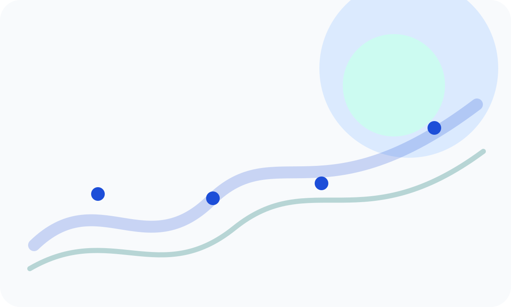

I care about understanding why a solution works.
I am an AI student focused on building practical Machine Learning systems and explaining the decisions behind them.

My current focus
Through the FlyRank Machine Learning and AI Fluency tracks, I have worked on task framing, data contracts, baseline ranking rules, grouped model evaluation, prompt systems, and evidence-led portfolio communication.
I am still developing as a software and machine learning practitioner. I do not present internship exercises as production deployment. I use them to show how I reason, verify assumptions, measure results, and learn from limitations.
Start with the decision
Define what someone needs to do differently before choosing a model.
Make the baseline visible
Use a simple benchmark so later complexity has something honest to beat.
Protect evaluation
Check leakage, split integrity, feature timing, and operational metric fit.
Explain the limits
Separate measured evidence from assumptions, proxies, and next steps.
My goal
I am looking for a Machine Learning internship where I can contribute, learn from experienced engineers, and continue strengthening my end-to-end project skills.